Games104笔记-2-引擎架构分层
本文为课程Games104第二节课：Layered Architecture of Game Engine的个人笔记。
A Glance of Game Engine Layers
工具层
当我们第一次接触UE或者Unity时，映入眼帘的不是晦涩的代码，而是一个由许多工具组成的UI操作界面（在UE里叫做UE-Editor）：
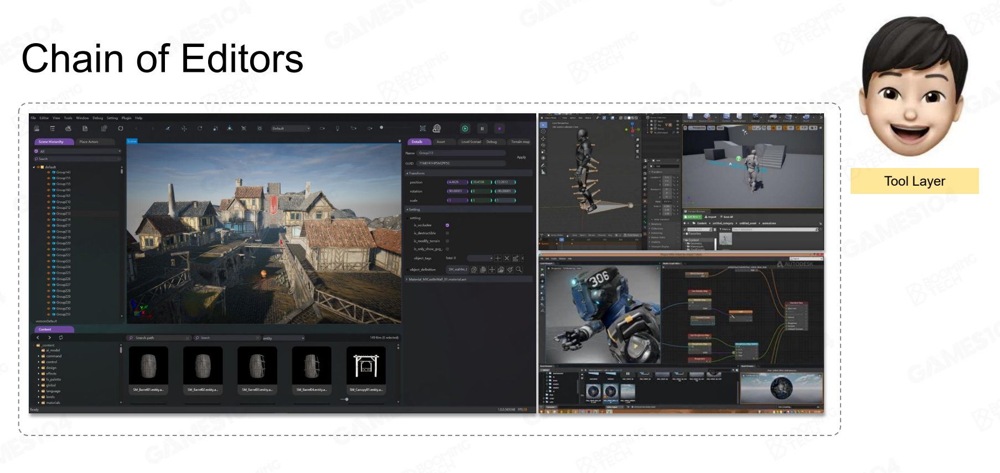
这一层是面对我们引擎用户的，叫做工具层，我们将其放在最顶层。
功能层
引擎的产品是游戏。为了能让游戏能够看的见、场景能够动态变化并且游戏能够和我们用户输入交互，我们肯定需要对这些需求提供相应的功能实现。在面试中经常被问到游戏中碰撞检测的原理，这涉及到的就是物理系统；另外即便是游戏客户端岗位也不可避免地被拷打图形学相关知识，而实时渲染领域则被应用于游戏引擎的渲染系统；另外游戏中玩法相关以及NPC人物也都离不开脚本、AI系统等。
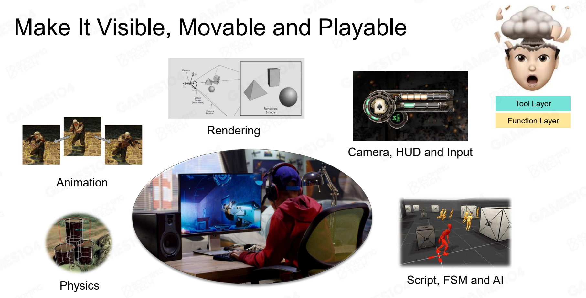
这一层叫做功能层，它为上面的工具层提供支持。
资源层
游戏中有许多不同类型的资源，例如三维模型、骨骼、动画、声音、贴图等。它们需要在同一个引擎内进行统一管理，这就是资源层的职能。它为功能层提供操作对象。
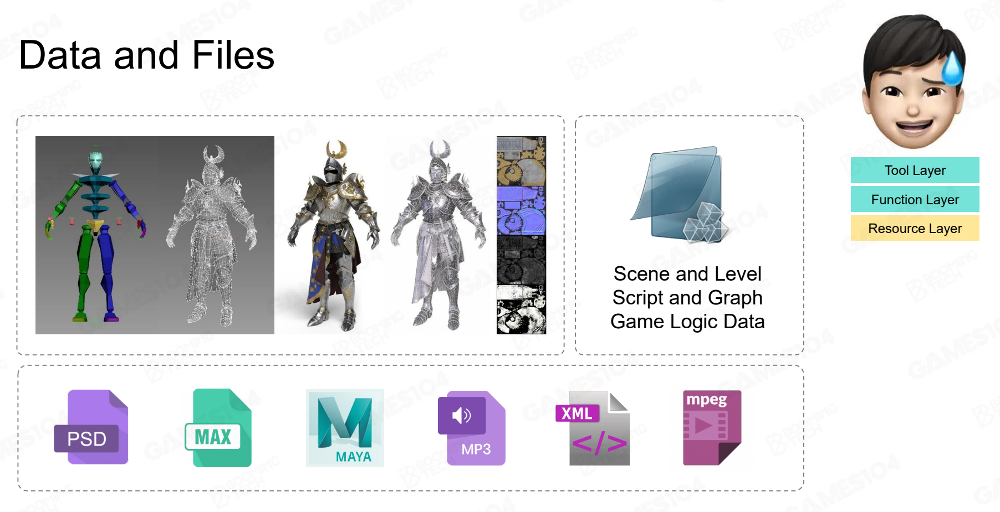
核心层
工具层、功能层和资源层会频繁调用底层的代码，例如基本容器、线程池、数学库、内存管理等，而这些就是核心层所提供的东西。
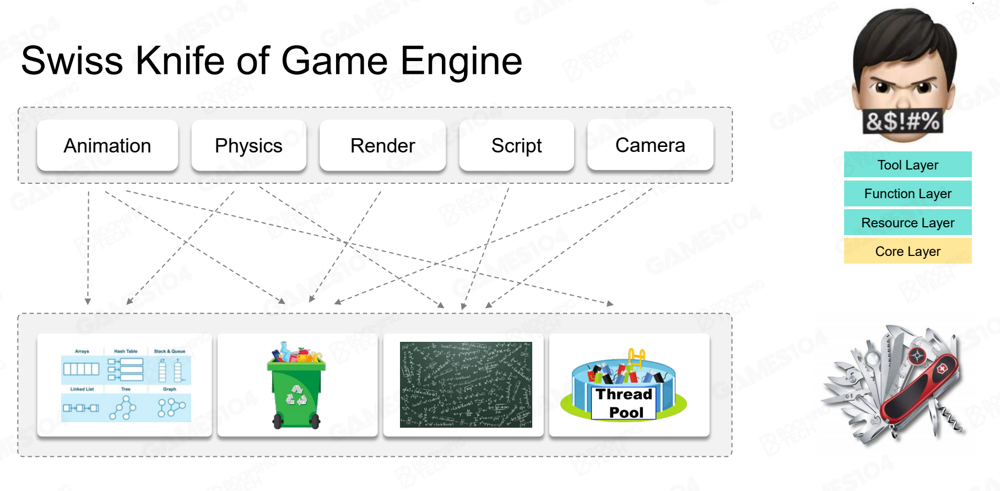
平台层
这是游戏引擎中最容易被忽略的一层。它所做的是统一游戏引擎对于不同平台（例如操作系统，文件系统，图形API等）进行归一化处理。
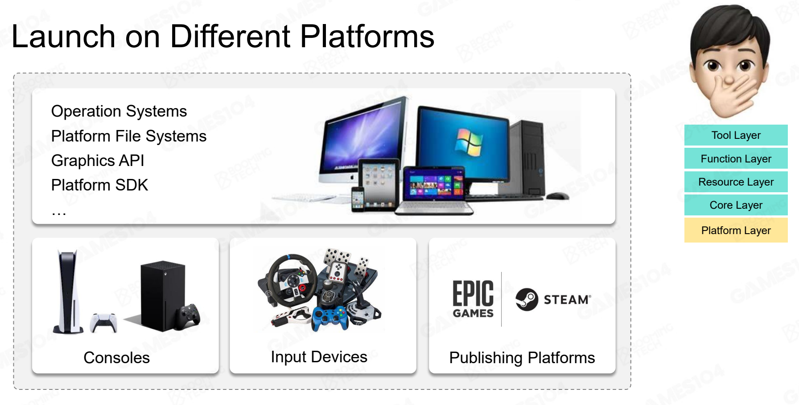
第三方库
一些中间件，为引擎提供更多已有实现的功能支持。例如UE中物理系统就是用的NVIDIA的PhysX。
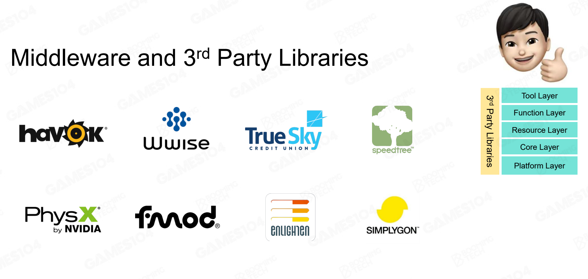
深入探索
假设我们想要实现引擎中的一个模块，叫做动画系统，我们如何通过上面介绍的五个Layer入手？
资源层
首先我们的主角是个三维模型，可能是各种格式的，假设是从Maya制作的。在我们导入Maya文件时，内部肯定有很多无效信息，我们需要在其中提取出我们需要的信息（写过软光栅的应该知道，我们需要的其实就是VBO、IBO以及贴图uv）。主角肯定也有相关贴图，可能是PS的psd格式，这里面则有很多针对PS的无效信息，我们同样也需要处理。我们对于不同的资源统一管理化为资产，即Asset。
另外一个游戏人物（一个资产），可能会和其它资产进行关联，这就涉及到Composite asset（例如XML文件）来进行描述，并采用GUID来作为对于一个特定资产的唯一描述。
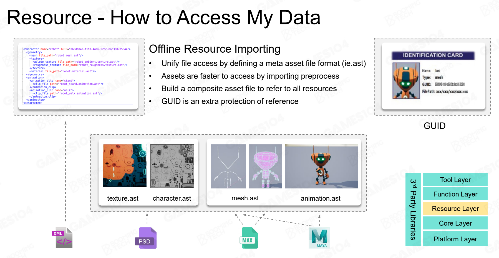
资产的对象有了，资产的关系假设我们也能维护好。那么在游戏实际运行过程中，我们显然对于这些资产在内存中的生命周期也需要进行管理。这就涉及到资产管理器（Asset Manager）的实现，包括资产实时加载卸载、资源池、GC、延迟加载等。
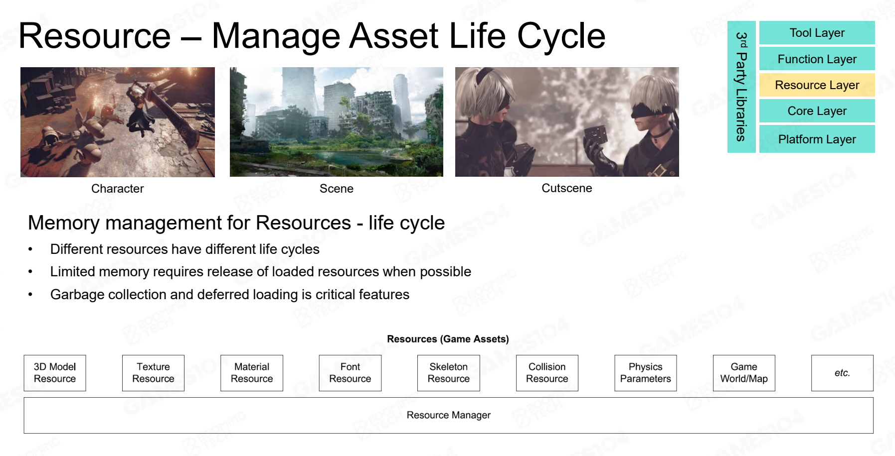
功能层
既然是动画系统，那么我们肯定要让游戏世界动起来。这引入游戏引擎中最TM常见的概念：Tick。Tick可以分为Tick Logic和Tick Render，我们先在当前时间帧对逻辑信息进行处理，然后将其渲染到屏幕上。
一个Tick帧相当于现实世界中的一个普朗克时间，是引擎世界的最小时间单位，它内部涉及到很多模块的迭代：
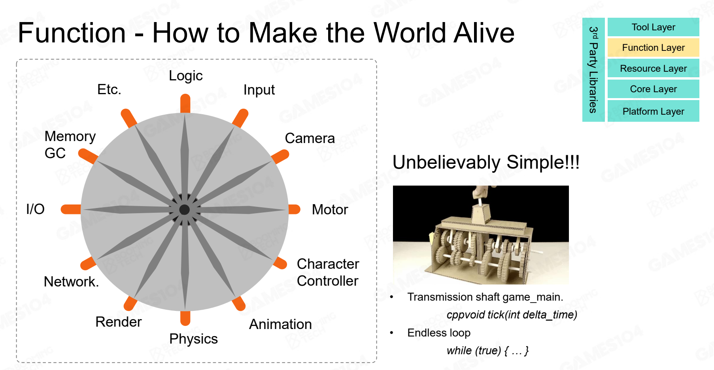
在我们的动画系统中，我们需要在每一帧Tick获取我们动画文件中特定位置的Pose姿态，然后将其驱动我们角色的模型，然后渲染出来。
功能层非常复杂、庞大，它提供了游戏引擎中大部分的功能模块。但是对于一些功能，是应该在引擎中提供还是只针对特定游戏，其边界通常不太明确。
另外，现代CPU提供了多线程的支持，那么现代游戏引擎也对于可以并行运算的功能进行了多线程的拆分。所谓的Job System做的就是这种事情。当然由于不同任务之间可能有关联（Dependency），这种过程事实上是非常复杂的。
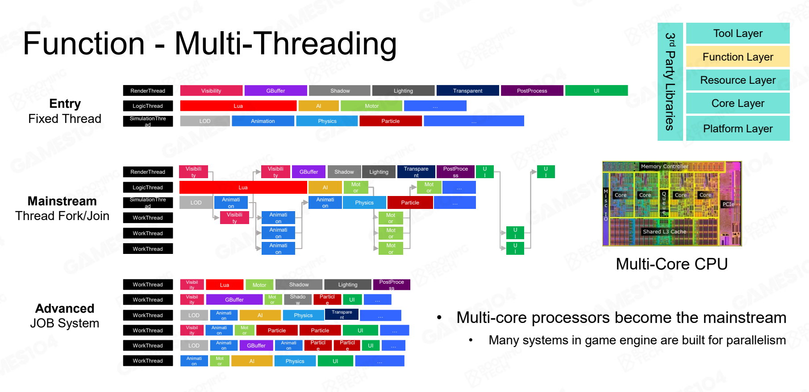
核心层
核心层是游戏引擎的基础，提供各种功能模块所需的工具，包括数学库、数据结构与容器、内存管理等。视频最后提到了为什么STL效率那么低（例如STL的内存分配会产生空洞，或者说内存碎片？），老师也没给出准确的解答。但是对于游戏引擎，它内部经常提供了自己的一套STL的实现用于优化在游戏场景下的性能。
另外引擎的数学库也针对于游戏实现。例如平方根的倒数，在游戏中则有高性能但不是完全准确的实现。以及SIMD在数学库也有很多应用。
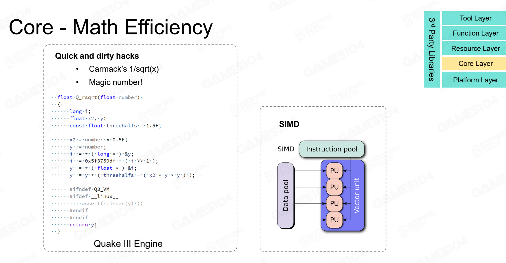
对于动画系统，我们内部也需要一定的数据结果来支持存储、访问相关数据。
另外提一嘴内存管理，课程提到了Cache的重要性，对于Cache的访问效率要远高于直接范围VRAM。课程提到了三条各种优化算法的金科玉律，本质是为了保证缓存友好：
- Put data together
- Access data in order
- Allocate and de-allocate as a block
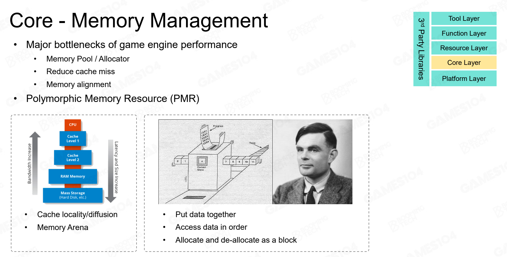
Core包含了很多部分，且这些代码都要求极高质量，不能乱改。
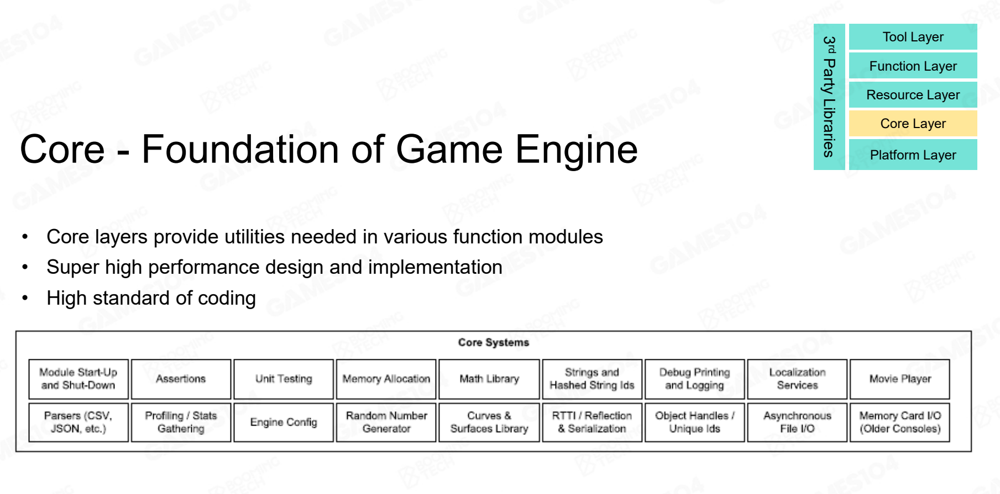
平台层
平台层使得游戏能兼容不同平台、不同硬件设备，为上层提供平台无关的服务和信息。对于图形API（如OpenGL、DirectX、Vulkan等），平台层需要使用RHI（Render Hardware Interface）去除不同API的差异，上层使用时无需关心渲染使用的是何种API。
工具层
我们的动画系统本身也应该提供一系列工具给引擎使用者使用。在UE中，可能涉及到动画蓝图，Control Rig等。工具则是艺术家、程序员发挥创意的媒介，更强调使用的便捷性。
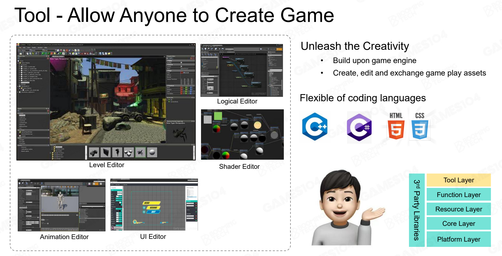
为什么分层？
主要是功能解耦。每一层有自己的单一职责，下层为上层提供基础服务且上层无需知道下层的具体实现。当然下层禁止访问上层。这主要是为了方便开发与迭代。
Takeaways
- 引擎被设计为分层架构
- 在引擎的分层结构中，越往上，越灵活；越往下，越稳定
- 虚拟世界由离散的Tick组成